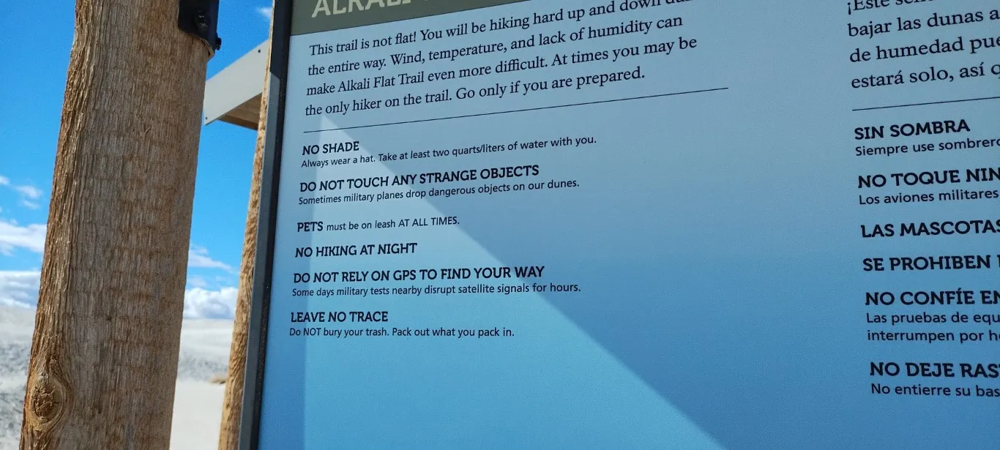
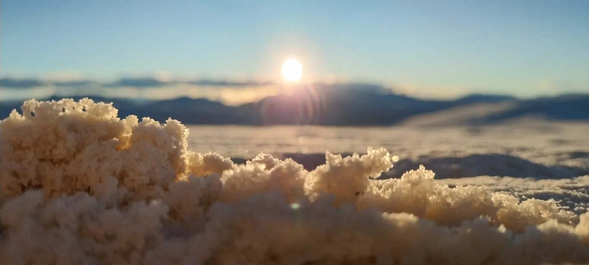

I have been 34 National Parks.
I've touched the arches at Arches, touched the Sequoias at Sequoia, touched been to Theodore Roosevelt, etc.
But, out of all of them, my favorite National Park is White Sands.

Sand
The main attraction of White Sands is the white sand.
White Sands' sand is composed of gypsum powder (instead of quartz grains like most sand), which gives the sand its brilliant and almost blindingly white colour. It's really cool to see in person. There are gypsum beaches elsewhere in the world, but White Sands is the only gypsum desert. It truly is surreal to be surrounded by endless white in every direction.
The gypsum also has the effect of making the sand really soft. Like, ridiculously soft. I spent my entire time at White Sands—during which I walked along multiple miles of dunes—completely barefoot, and it was delightful (note: only do this if it's cloudy otherwise you will get burned)
Activities
During my trip to White Sands, I occupied myself by:
- Walking in a straight line in a random direction for 10-20 minutes (the sand was so softttt).
- Sledding down sand dunes on a waxed plastic surfboard. The gypsum is surprisingly low-friction so you can build up a fair amount of momentum.
- Sandwriting on dunes (pictured below).
- Sneaking onto a movie set.

There isn't much else in the way of activities, but that just makes it an even more tranquil and peaceful experience.
Filming
Movie studios love White Sands because it's easy to film there and it looks like an alien landscape.
For example, the day that I went (Jan 26, 2024) happened to be the same day that episode 2 from the sci-fi miniseries "A Thousand Suns" was being filmed. When I noticed the film crew, I wrote "HELLO" on a nearby dune. I feel kind of bad about this, as it must have annoyed some VFX editor who had to spend a half-hour digitally erasing my message.
You can watch the episode here, and can vaguely see me on a sand dune in the background at 0:33 in this behind-the-scenes video.

Missile Testing
White Sands National Park is directly adjacent to White Sands Missile Range, a major military installation.
If you like seeing military aircraft, this is the place to do it. I saw six Apache helicopters on the 10-minute drive from the campsite to the park.
Rule #2 on the official safety sign outside the park is "DO NOT TOUCH ANY STRANGE OBJECTS; Sometimes military planes drop dangerous objects on our dunes".
I burst out laughing when I first read that sign. Then I stopped laughing when I considered the implication that ocassionally fighter jets just drop ordanance on a National Park. Then I compromised between these two emotions by quietly giggling.
Conclusion
This is the place where the problems caused by the military are amusing, the movie filming is frequent, the sledding is delightful, and the sand is white.
This is White Sands National Park.
~Ethan